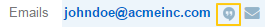

Manage Call Logs¶
Export Call Logs¶
The exported file will contain all call record fields marked for export in Call settings.
Note
All existing call records are exported at once.
- In the main menu, navigate Activities>Calls.
- On the calls grid page, click Export Grid, and click either CSV or XLXS on the list:
- CSV—Export call logs to a comma separated values file.
- XLXS—Export call logs to a MS Excel spreadsheet.
As soon as the export job finishes, you will receive a notification to your primary email address.
View a Call¶
From the Call Grid¶
In the main menu, navigate Activities>Calls.
In the grid on the Calls page, click the required call.
Alternatively, you can click the ellipsis menu at the right end of the corresponding row and then click the View icon.
Review the call details.
Edit a Call¶
From the Call Grid¶
In the main menu, navigate Activities>Calls.
In the grid on the Calls page, click the ellipsis menu at the right end of the corresponding row and then click the Edit icon.

Update call details as required. For the description of call log fields, see Call View Page.
Click Save.
From the Call View Page¶
In the main menu, navigate Activities>Calls.
In the grid on the Calls page, click the required call.
Alternatively, you can click the ellipsis menu at the right end of the corresponding row and then click the View icon.
On the call view page, click the Edit button in the upper-right corner of the page.
Update call details as required. For the description of call log fields, see Call View Page.
Click Save and Close in the upper-right corner of the page. Alternatively, you can use other Save options from the list next to the Save and Close button:
- To save intermediate edits, select Save from the list.
- To save changes, close the call information and log a new call, Save and New.
From the Related Entity View Page¶
Users who are owners of a call and entity records that are specified in the call context have this call displayed in the Activity sections of their view pages.
On the entity record view page, click Activity.
In the Activity section, choose a call log that you want to edit, click the ellipsis menu at the right end of the corresponding row and then click Update Call log.
In the dialog that appears, update call details as required. For the description of call log fields, see Call View Page.
Click Update Call.
Add a Context to a Call¶
From the Call View Page¶
In the main menu, navigate Activities>Calls.
In the grid of the Calls page, click the required call.
Alternatively, you can click the ellipsis menu at the right end of the corresponding row and then click the View icon.
On the Log call page, click the Add Context button in the upper-right corner of the page.
In the Add Context Entity dialog box, select an entity that you wish to add as a call context. To do this, click the arrow next to the entity name in the upper-left corner of the dialog box, and select the required entity from the list.

In the main grid of the dialog box, click the required record.
You will see the added context on the call view page under the call log name.

From the Related Entity View Page¶
Users who are owners of a call and entity records that are specified in the call context have this call displayed in the Activity sections of their view pages.
You can add more contexts to a call directly from the related entity view page.
On the entity record view page, click Activity.
In the Activity section, choose a call log that you want to add context to, click the ellipsis menu at the right-hand end of the corresponding row and then click Add Context.
Continue as described in steps 4–5 of the Add Context to a Call from the Call View Page action description.
You will see the added context in the second row of the call details.
Remove Context from a Call¶
From the Call View Page¶
In the main menu, navigate Activities>Calls.
In the grid on the Calls page, click the required call.
Alternatively, you can click the ellipsis menu at the right end of the corresponding row and then click the View icon.
On the Log call page, find the context that you want to remove in upper-left corner of the page, under the call log name. Click the x icon next to it.

From the Related Entity View Page¶
Users who are owners of a call and entity records that are specified in the call context have this call displayed in the Activity sections of their view pages.
You can remove contexts of a call directly from the related entity view page.
On the entity record view page, click Activity.
In the Activity section, choose a call log that you want to remove context from, and click it to see the details.
Find the context that you want to remove in the second row of the call log details, and click the x icon next to it.
Unshare a Call¶
Important
Enterprise Edition only.
To stop sharing a call with users / business units / organizations:
In the main menu, navigate Activities>Calls.
In the grid on the Calls page, click the required call.
Alternatively, you can click the ellipsis menu at the right end of the corresponding row and then click the View icon.
On the Log call page, click the Share button in the upper-right corner of the page.
In the Sharing Settings dialog box, in the Already shared with list, find the name of a user / business unit / organization you want to stop sharing this call log with and click the Delete icon next to it.

- Click the Apply button.
Comment a Call¶
From the Call View Page¶
In the main menu, navigate Activities>Calls.
In the grid on the Calls page, click the required call.
Alternatively, you can click the ellipsis menu at the right end of the corresponding row and then click the View icon.
On the Log call page, click Comments.
In the Comments section, click the Add Comment button in the lower-right corner.
In the Add Comment dialog, enter your comment. If rich text functionality is enabled for you, you can format you comment in the editor according to your liking. You can also add an attachment to you comment.
Click the Add button.
Your comment appears in the Comments section of the call view page.
Tip
You can edit or remove your comment. To do this, find you comment and click the ellipsis menu at the right end of the corresponding row. Then click the Edit / Delete icon.
From the Related Entity View Page¶
Users who are owners of a call and entity records that are specified in the call context have this call displayed in the Activity sections of their view pages.
You can comment a call directly from the view page of a related entity.
On the entity record view page, click Activity.
In the Activity section, choose a call log which you want to comment, and click it to see details.
Click the Add Comment button in the lower-right corner.
Continue as described in steps 5–6 of the Add Comment to a Call from the Call View Page action description.
You will see your comment in the Comments section of the call log details.
Log a Call¶
From the Calls Grid¶
In the main menu, navigate Activities>Calls.
On the Calls page, click the Log Call button in the upper-right corner of the page.
Click Log call, and specify the following information:
- Owner—A user who is responsible for a call log and can manage it. By default, a user who logs a call is selected as a call owner.
- Subject—What the call was about.
- Additional Comments—Any call details that are worth mentioning.
- Call Date & Time—When the call was started. Click the fields to select the date. By default, these fields are filled with date and time of the call log start.
- Phone Number—A number that the call was made to / from. This is not necessary a phone number. Many services that enable you make calls identify users by email, nickname, etc. You can enter any of these identifiers.
- Direction—Whether the call was outgoing or incoming.
- Duration—How long the call lasted. You can user the following formats: #:#:# (e.g. ‘1:30:0’ or ‘90:00’) or #h #m #s (e.g. ‘1h 30m’ or ‘1.5h’ or ‘90m’).
Click Additional, and specify the following information:
- Context—Select a record that has a meaningful relation to a call. Start entering a record name and when you see suggestions in the drop-down, click on the required name to select it. A call will then be displayed in the Activity section of the selected record.
Click Save and Close in the upper-right corner of the page.
Make a Call¶
You can make voice and video calls using the integrated Hangouts functionality.
Important
If you do not see icons and buttons that allow making Hangouts calls, make sure that the Hangouts functionality is enabled for you. Contact your administrator for more information.
Tip
For more help on Hangouts calls, see Hangouts Help on google.com.
From the Calls Grid¶
In the main menu, navigate Activities>Calls.
On the Calls page, click the Log Call button in the upper-right corner of the page.
On the Log call page, specify the call details (see steps 4–5 of the Log a Call from the Calls Grid), and click the Start a Hangout button in the upper-right corner of the page.
Hint
If you do not specify a phone number in the Phone Number field, you can still start a Hangouts call. In this case, instead of immediately starting a call to the specified phone number, Hangouts will suggest sending invites or a call link to the person.
From the Related Entity Record View Page¶
By logging a call from a record view page, you specify that this record relates to the call in some way.
On the related entity view page, perform one of the following:
Click More Actions in the upper-right corner of the page and click Log Call on the list.
Find the Phone / Phones field, point to a specified phone number, and click it to select. The Hangouts Call and Log Call icons appear next to it.
Click the Hangouts Call icon to call to the specified phone number immediately. The Log Call dialog appears in the background.
Note
You can start a Hangouts call this way whenever in the system you see a phone number on the record view page. However, the Log Call dialog appears only for the records of an entity for which the Calls activity is enabled.
Click the Log Call icon to specify call details and then start a call.
Find the Emails field, point to a specified email address, and click the Hangouts Call icon that appears next to it. A Hangouts call will start immediately. The Log Call dialog box appears in the background.
Note
You can start a Hangouts call this way whenever in the system you see an email address on the record view page. However, the Log Call dialog appears only for the records of an entity for which the Calls activity is enabled.
If you used Log Call action button or icon, in the Log Call dialog box, specify the required data (see steps 4–5 of the Log a Call from the Calls Grid guide), and click the Start button next to the Hangouts label to initiate a hangout call.
The call will appear in the Activity section of the page.
Note
If you make a call from a related entity record view page, in the Log Call dialog box this entity record appears as a context of the call. The phone number specified on the page is considered by default as the one you make a call to.
If you make a call from an account view page using an action button, both the account and its default contact appear as contexts. If you make a call from an account view page by pointing to the icon next to the phone number of one of the contacts, only this contact appears as a call context.
If you make a call from the My User page, you do not appear as a context of a call as you are connected to a call as its owner (you will not appear in a call context even if you change a call owner while logging a call).
Delete a Call¶
From the Calls Grid¶
- In the main menu, navigate Activities>Calls.
- In the grid on the Calls page, choose the call log you want to delete, click the ellipsis menu at the right end of the corresponding row and then click the Delete icon.
- In the Deletion Confirmation dialog box, click Yes, Delete.
From the Call View Page¶
Alternatively, you can delete a call log from the call view page by clicking the Delete button in the upper-right corner of the call view page.
From the Related Entity Record View Page¶
Users who are owners of a call and entity records that are specified in the call context have this call displayed in the Activity sections of their view pages.
- On the entity record view page, click Activities.
- In the Activities section, choose a call log that you want to delete, click the ellipsis menu at the right end of the corresponding row and then click Delete.
- In the Deletion Confirmation dialog box, click Yes, Delete.
Delete Multiple Calls¶
You can delete multiple calls at a time.
- In the main menu, navigate Activities>Calls.
- In the grid on the Calls page, select check boxes in front of the calls that you want to delete.
- Click the ellipsis menu at the right end of the grid header row and then click Delete.
- In the Delete Confirmation dialog box, click Yes, Delete.
Related Topics